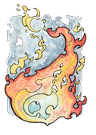
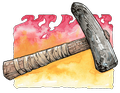
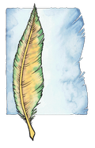
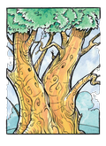
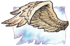
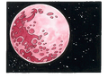

III. Tarafsızlık Tanrıları
Gilean (Boşluk): Gilean, Tarafsızlık Tanrıları'nın aile reisidir ve içinde tüm bilgilerin ve gerçek isimlerin saklı olduğu Tobril kitabını koruyan tanrıdır. Sadece Tobril'i korumakla görevli olmayan Gilean ayrıca İyi ve Kötü Tanrılar arasındaki dengeyi korumakla da görevlidir. Bunu yaparken diğer Tarafsızlık Tanrıları'ndan da yardım alır. Kontrolü altındaki tek alan, her türlü bilgi alanıdır. Sembolü açık duran bir kitaptır. Rengi gridir. Takımyıldızı bir açık kitap şeklindedir ve gökyüzünde Paladin ile Takhisis'in arasında durur. Gilean avatar olarak kendisine orta yaşlı, herhangi bir ırka mensup ya da cinsiyete sahip olan bir kütüphane görevlisidir. Diğer isimleriyse bölgelerine göre şunlardır: Kitap Gilean, Gri Yolcu, Bilge, Ruhların Geçidi.
Sirrion (Akan Alev): Sirrion, doğal güçlerin ve ateşin tanrısıdır. Parlayan güneşten, küçük bir ışık kaynağına kadar bütün ateşler onun kontrolü altındadırlar. Bir ormanda bulunan yaşlı ağaçların yerini yeni ağaçların alması için orman yangını da çıkartabilir, ateşle oynayan bir çocuğun ateşe saygı göstermesi için elinin yanmasını da sağlayabilir. Kontrolü altındaki alanlar arasında alev, doğal güçler, değişim ve dönüşüm vardır. Sembolü, çok renkli bir ateştir. Renkleri parlak kırmızılar ve sarılardır. Takımyıldızı yoktur; gökyüzünde sadece kırmızı-sarı renkte parlayan bir yıldız olarak görünür. Sirrion genellikle alevlerin içinde yüzünü gösterir, ama ateşin değişik renklerinde görünen bir cübbeye sahip insan şeklinde de görünebilir. Diğer isimleriyse bölgelerine göre şunlardır: Ateşefendisi, Simyacı, Büyücü (Mithas).
Reorx (Demirci): Reorx, cücelerin ve onların endüstrilerinin (demircilik) tanrısıdır. Ayrıca çekiciyle Kaos'dan bir parça kopartarak Krynn'in ve gökyüzündeki yıldızların oluşmasını sağlamıştır. Hiddukel'in oyununa gelerek Gritaş'ı yapmıştır. Kontrolü altındaki alanlar arasında cüceler, silahlar ve teknoloji vardır. Sembolleri, döven bir çekiç ya da cüce yapımı bir çekiç (Thorbardin) dir. Renkleri arduvaz grisi ve kırmızıdır. Takımyıldızı yoktur; gökyüzünde bir alev parçası gibi kıpkırmızı parlayan ve Sargonnas'ın takımyıldızının yanında duran bir yıldız olarak görünür. Reorx avatar olarak genellikle sarhoş ve kumarbaz olan Dougan Redhammer adlı bir cüceyi kendisine seçer. Diğer isimleriyse bölgelerine göre şunlardır: Örs (Elian), Silahustası (Mithas), Usta Reorx (Gnom), Zanaatkâr Reorx (Kender).
Chislev (Hayvan): Chislev doğanın kendisidir; korkusu sonbaharı, umutsuzluğu kışı, umudu baharı ve eğlenme isteği de yazı yaratmıştır. Müritleri gibi, tüm hayvan ve bitkiler de ona şükran borçludurlar; sabahleyin çiçekler güneşe doğru dönerlerken aynı zamanda Chislev'e doğru da dönmüş olurlar, onu her sabah selamlarlar. Kontrolü altındaki alanlar arasında doğa, yabanıl hayat ve hayvanlar vardır. Sembolü kahverengi, sarı ve yeşil renkli bir tüydür. Renkleri kahverengi, sarı ve yeşildir. Takımyıldızı yoktur; Mishakal'ın takımyıldızı ve Zivilyn'in yıldızına yakın duran ve sarı renginde parlayan bir yıldızı vardır. Chislev, avatar olarak kendisine genellikle güzel bir insan ya da elf kadını seçer. Diğer isimleriyse bölgelerine göre şunlardır: Vahşi Kişi (Mithas), Issız Yer.
Zivilyn (Hayat Ağacı): Tüm bilgeliklerin tanrısı olan Zivilyn'in kendisi kutsal Hayat Ağacı'dır. Gilean bütün bilgileri kendinde tutarken, Zivilyn de bilgelikleri kendisinde tutmaktadır. Bilgelik olmadan bilginin, bilgi olmadan da bilgeliğin bir işe yaramadığını bilen bu iki tanrı hep birlikte hareket etmektedirler. Chislev'in eşidir. Kontrolü altındaki tek alan bilgeliktir. Sembolü yeşil ve altın renklerinde dev gibi bir ağaç ya da bir vallen ağacıdır. Renkleri yeşil ve altın rengidir. Takımyıldızı yoktur; Mishakal'ın takımyıldızı ve Chislev'in yıldızı arasında parlayan bir yıldızı vardır. Zivilyn, avatar olarak kendisine herhangi birisini seçebilir fakat genellikle yaşlı, bilge bir adam kimliğiyle görünür. Diğer isimleriyse bölgelerine göre şunlardır: Dünya Ağacı, Hayat Ağacı (Qualinesti, Silvanesti), Bilge Kişi (Mithas).
Shinare (Kanatlı Zafer): Shinare, zenginlik, endüstri ve ticaret tanrısıdır. Tüccarlar, esnaf halk ve benzeri kesimlerden kendi takipçilerini oluşturmuştur. Tembelliğe tolerans gösteremez; tembel tembel dolaşan biri ona, gözleri önünde hızla ölüyor görünür. Ayrıca Sirrion'un eşidir. Kontrolü altındaki alanlar arasında zenginlik, endüstri, özgürlük ve güç vardır. Sembolü bir grifon kanadıdır. Renkleri altın rengi, gümüş rengi ve kahverengidir. Takımyıldızı yoktur, Habbakuk ve Branchala'nın takımyıldızlarının yakınında gümüş rengi bir yıldızı bulunur. Shinare, avatar olarak kendisine zengin, saygıdeğer bir kişi ya da aynı özelliklere sahip bir tüccar seçer. Diğer isimleriyse bölgelerine göre şunlardır: Kanatlı Kişi (Silvanesti, Qualinesti), Gümüş Efendi (Thorbardin), Yürüyen Özgürlük (Ergoth), Denge (Mithas), Terazi (Mithas).
Lunitari (Peçeli Bakire): Lunitari, Tarafsız büyünün ve illüzyonların tanrısıdır. Büyü aşkı sayesinde Kırmızı Cübbeliler tarikatı kurulmuştur. Birçok büyücü onun tarikatı altında büyü çalışmak ister, çünkü büyüde pek bir kısıtlama getirmez. Solinari'yle uzun zamandan beri dostturlar ve çoğu zaman birlikte çalışırlar. Kontrolü altında tarafsız büyü ve illüzyon alanları vardır. Sembolü, kırmızı bir daire ya da küredir. Rengi kırmızı ya da macenta gridir. Takımyıldızı yoktur fakat gökyüzünde kırmızı ay formunda görünür. Lunitari avatar olarak kendisine baştan aşağı kırmızı cübbeler içinde duran kızıl saçlı, güzel bir insan kadını seçer. Diğer isimleriyse bölgelerine göre şunlardır: Luin (Ergoth), Kırmızı-Göz (Goodlund), Gece Mumu (Thorbardin), İllüzyon Bakiresi (Mithas).
Kaynak: http://frpnet.net